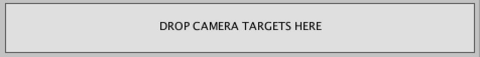
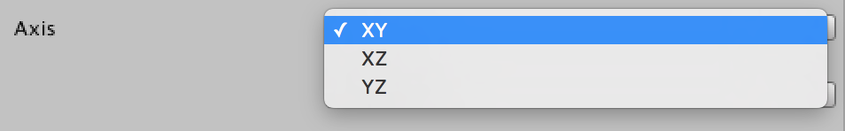
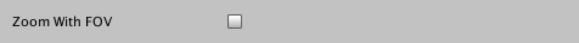

Core
Overview
The Core represents the main class - ProCamera2D.cs. It's a very simple class takes care of keeping track of all targets, knowing which axis to use (XY, XZ, YZ), how fast to move and, more importantly, it's the brain of all extensions and triggers.
Here are the main features of the Core:
Multi-target follow (weighted)
If your game has multiple characters or if you just want to follow that special missile while still keeping your player in sight just add another target (or as many as you want) to the camera and you’re done. ProCamera2D will find the average position of them taking in consideration their variable influences. Perfect for your Super Smash Bros. clone!
Follow smoothness (per axis)
Sometimes you need your camera to be very fast on a certain axis and more fluid on another. Think platformers for example, you might want your camera to be less rigid when jumping. With ProCamera2D you can define the smoothness of the follow on each axis.
Perspective & Orthographic modes
All ProCamera2D features (except parallax and pixel-perfect) work exactly the same either with a perspective (3D) or an orthographic (2D) camera. No special configuration required. Simply change your projection type and you’re done!
All axes support (XY, XZ, YZ)
Are you building a platformer? A top-down racing game? A space simulator with a crazy camera setup? No worries, ProCamera2D has got you covered. With it’s multi-axis support you can use it on any kind of 2D & 2.5D game!
Setup
Select your game camera (called Main Camera by default) and drag the component file to the Main Camera GameObject. You should now see the ProCamera2D component editor on the Inspector window when you select your Main Camera GameObject.
Editor
This is how the ProCamera2D editor looks like. You can find it on your camera after adding the ProCamera2D component as explained above.
Drop Targets Area
As you can probably guess, this area is where you can drag your camera targets to. By dropping them inside this box they will be automatically added to the targets list below.

Targets List
This list shows you all the targets that the camera is currently following. You can re-order the targets (although it makes no difference), delete or duplicate a target.
Parameters:
Transform: The Transform component of the target GameObjectOffset: A horizontal and a vertical float that offsets the target position that the camera will followInfluence(0 – 1): A horizontal and a vertical float between 0 and 1 that defines how much influence each axis should have in the final camera position.
Center Target On Start
If this checkbox is enabled the camera will instantly move to the targets position when the game starts. For this to work the target needs to be already added.
For centering targets added during runtime you should use the method Reset.
Axis
Choose which axis your game uses. If it’s a platformer you’ll probably stick to XY, but if it’s a top-down game you might be using XZ. Feel free to choose what fits you best. All features work exactly the same across all axes. Don’t forget to rotate the camera accordingly.

Update Type
Choose when do you want the camera to update its position. Use FixedUpdate if your objects are moved using physics and stick to LateUpdate if you’re moving them outside the physics loop. If you’re using a mixture of both you’ll have to test both types and see what works best for you. If you want to use a custom timestep and need to manually update the camera movement, select ManualUpdate. This will require you to call the Move method on the core class and pass the desired timestep. Remember, if you’re getting a stuttering camera movement is probably because you’re using the wrong update type.
Ofsset
This value adds an overall offset to the final camera position given by the targets and other influences. Use it to give a constant offset to the camera position. Remember that each target can also have it’s own offset value.
Zoom With FOV
This option is only available when using a perspective camera. If enabled, the camera will zoom by changing the FOV instead of actually moving closer/further to/from the objects. Might look better on some cases, but on most it will cause some visual distortion above a certain threshold. Use with care.

Extensions
In this section you control which extensions you want to have enabled for your camera. This section is here only as a quick way to add/remove components. You can still add/remove them manually like you would with any other component. See the user-guide for more information on each extension.
Triggers
Use this section to add triggers and to navigate (on the scene view) to them. You can also see how many triggers of each type you have on the scene. See the user-guide for more information on each trigger.
Methods
Although you can accomplish almost everything with the ProCamera2D editor, you might feel the need to have a more precise control or even change some parameters during runtime. For that, you start by importing the ProCamera2D namespace, by putting the following code on the top of your class:
using Com.LuisPedroFonseca.ProCamera2D;
After that, all you have to do is access, from anywhere on your code, the ProCamera2D static instance. In the following example we add a camera target during runtime.
ProCamera2D.Instance.AddCameraTarget(myTransform);
Through the static ProCamera2D instance you can change any public parameter and access the methods described below. Please notice that all extensions and triggers can also be accessed for runtime configuration but do not provide static instances, so you have to access them like you would any other standard Unity component.
Apply Influence
This method is used by most extensions. What it does is simply applying the given influence to the camera during one frame.
ApplyInfluence(Vector2 influence)
Parameters:
influence: The vector representing the influence to be applied
Apply Influences Timed
This method is similar to the previous one but here you can pass an array of different influences and their respective durations.
ApplyInfluencesTimed(Vector2[] influences, float[] durations)
Parameters:
influences: An array of Vector2’s with the influences to be applieddurations: An array of float’s with the duration of each corresponding influence
Add Camera Target
Sometimes you’ll want to add some new camera targets during runtime. That’s where this method comes in.
AddCameraTarget(Transform targetTransform, float targetInfluenceH = 1f, float targetInfluenceV = 1f, float duration = 0f)
Parameters:
targetTransform: The transform component of the targettargetInfluenceH: The influence this target horizontal position should have when calculating the average position of all the targetstargetInfluenceV: The influence this target vertical position should have when calculating the average position of all the targetsduration: The time it takes for this target to reach it’s influence. Use it if you want a more progressive transition
Remove Camera Target
Not much to tell about this one. Use it to stop following a target.
RemoveCameraTarget(Transform targetTransform, float duration = 0f)
Parameters:
targetTransform: The transform component of the targetduration: The time it takes for this target to reach a zero influence. Use it if you want a more progressive transition
Get Camera Target
Gets the corresponding CameraTarget from an object’s transform.
GetCameraTarget(Transform targetTransform)
Parameters:
targetTransform: The transform component of the target
Adjust Camera Target Influence
If you want to adjust at runtime the influence that a target has you can use this method. Great to adjust a target influence based on its distance or speed for example.
AdjustCameraTargetInfluence(CameraTarget cameraTarget, float targetInfluenceH, float targetInfluenceV, float duration = 0f)
Parameters:
cameraTarget: The CameraTarget of the targettargetInfluenceH: The influence this target horizontal position should have when calculating the average position of all the targetstargetInfluenceV: The influence this target vertical position should have when calculating the average position of all the targetsduration: The time it takes for this target to reach it’s influence. Don’t use a duration if calling every frame
Update Screen Size
If you want to manually adjust at runtime the size of the camera.
UpdateScreenSize(float newSize, float duration = 0f)
Parameters:
newSize: Half of the wanted size in world unitsduration: How long it should take to reach the provided size
Move Camera Instantly to Position
If you want to manually move the camera.
MoveCameraInstantlyToPosition(Vector2 cameraPos)
Parameters:
cameraPos: The final position of the camera
Reset
This method resets ProCamera2D and its extensions/triggers to their initial state. It’s very useful to use, for example, when your character dies and spawns in a different position on screen.
Reset(bool centerOnTargets = true)
Parameters:
centerOnTargets: If true (default), the camera will instantly move to your targets position